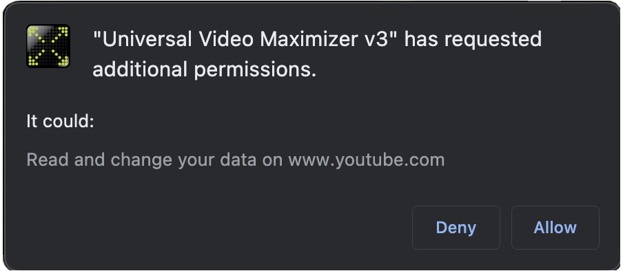
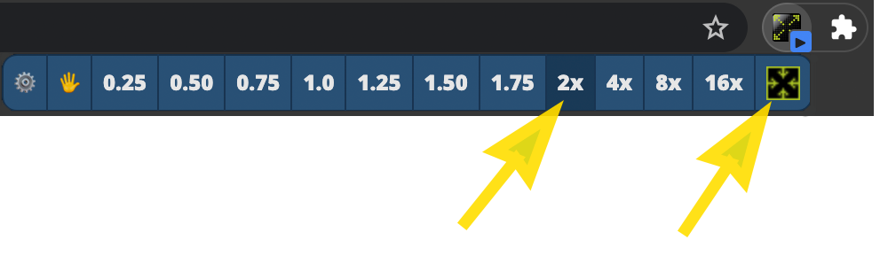
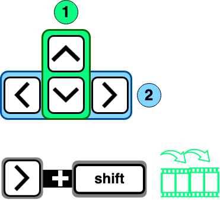
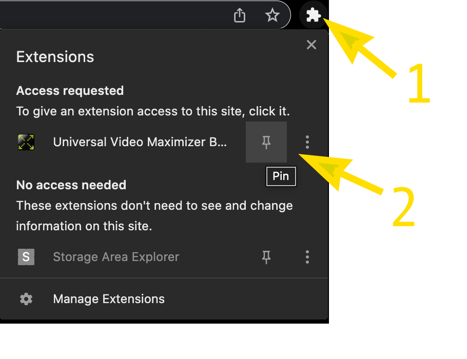
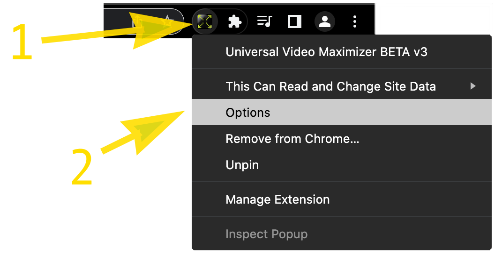

Video Maximizer - Help
Dec 2025 Update (Version 3.0.117)
- Localization support for multiple languages.
Dec 2025 Update (Version 3.0.116)
- Youtube fixes around zooming.
Oct 2023 Update (Version 3.0.115)
- Enhanced Security. Grants access only after you approve once.
- NEW Prompt for Advanced UI (for upgrading v2 users)
- Arrow keys enable video rewind/forward skipping
- Improved speed adjusted playback
- Settings to automatically grant extra permissions that reduces security prompts
Reporting other issues
- FREE
- Prompts for permissions to increase security and maintain your privacy.
- NEVER collects ANY data. Privacy and security are a top priorities.
- Is open-sourced ↗ for transparency.
New playback features
Video Maximizer does its best to include the original playback controls when zooming, but some sites may still fail and end up missing them. That's when having some basic playback controls as part of Video Maximizer comes in handy.
 After zooming, clicking the Video Maximizer button shows extra options to control playback speed.
After zooming, clicking the Video Maximizer button shows extra options to control playback speed.
Why speed control fails on some sites

When pages load their videos from a different site (e.g. a youtube video embedded in a non-youtube site), then the speed control feature will not work without permissions to both sites.If this happens, you can try rezooming a couple of times and see if more Access prompts show up. Yes, the multiple promptings can be annoying, but it's just how Chrome works and you will only be asked once per site. If you grant permissions, then you will NOT be prompted again.
If you continue to have access issues or find the prompting annoying there are extra permissions you can try in the Video Maxmizer Options page.
The fundamental issue is how the cross-domain-frame-permissions-granting works in Chrome. See Issue #826433 ↗
New keyboard shortcuts

- The Unzoom function can be accessed by clicking this icon (or the Spacebar after opening)
- Clicking the speed-change button a second time toggles it back to normal speed.

- up/down keys: ⬍ Increase and decrease playback speed.
- right/left keys: ⬌ Skip the playback forwards/backwards.
- shift + arrow: Longer skips.
- space key: Toggle speed to zero.
- relative skip times: Changing playback speed adjusts how long the skip is.
0.25x playback speed is 1/4th less the skip time.
e.g. 10s skip at 16x playback would skip forward 1m 40s in the video. - Length of skips Can be customized in the Options.
- TIP: Pressing the Escape key on the page UNZOOMS.
- TIP: Pressing escape when the Speed Control window is open will close it.
- NOTE: Speed changing will not work on sites hosting videos from other sites without unzooming and rezooming to see if there are additional access prompts. This should only be required once per site, but can be bypassed if you enable the "full access to all sites by default" in Options
- NOTE: There is an option to disable the Speed Controls to revert to the behavior of the original Video Maximizer (see Options below)
- Keyboard shortcut to zoom: This is built into chrome!
Go to
chrome://extensions/shortcuts
Pinning the extension to the toolbar makes it easier to use.

- To pin, first click on the Extensions puzzle piece icon
- Click the Pin icon
Known issues
Skipping doesn't work on Netflix
Skipping the video backwards on netflix causes an error. There's no workaround, so this feature is just disabled for now.
Speed controls don't work on some sites
Video Maximizer attempts to use the minimal permissions required to do its job. However, there are still some sites that require more access to work. (The technical reason has to do with embedding iframes that have cross-domain references.)
The default settings for Video Maximizer is maximum privacy, but see the Options page for more choices to grant this extension more permissions.
Disabling "Allow access to all sites by default" doesn't reset permissions
Another Chrome issue. Video Maximizer removes the extra permissions; however, since they've already been granted, it seems like the extension must be uninstalled and reinstalled to reset it.
Constant security prompting
You should only get prompted ONCE per unique site you use Video Maximizer on; however, if this frequency annoys you, then you have the choice to enable the "Allow access to all sites by default" option. You will then get one last prompt and never be bugged again.
Changing Options

- Right-click the icon
- Select Option from the dropdown menu.
Using with local video files
You can use Video Maximizer with local video files (like .mp4). Simply drag-and-drop into a browser window to start playing the video. Then click the extension button.
If you have issues with local files working, you may want to check the extension permissions.
- Go into Chrome Extensions page
chrome://extensions/ - Find the VideoMaximizer in the list of extensions.
- Click the Details button
- Scroll down until you see the "Allow access to file URLs" and make sure it's enabled.